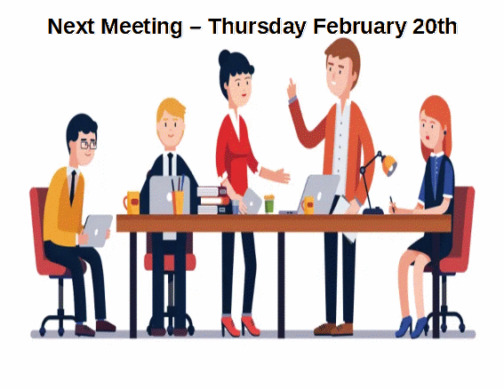

Important Meeting - Thursday February 20, 2025
Back to StoriesStory 808
Tue, 2025-02-18 11:54 — VA7AV

Our next meeting this coming Thursday, February 20th (7 PM, Kirsten's Hideout) is an important one!
The KARC board has been informed that the repeater network, as we've come to know it, is expected to require significant expenditures to maintain reliable operation.
As KARC revenues are very modest, our expenditures are always limited by the reality of our bank account.
The dollars we spend for Field Day, for example, can't also be spent on repeaters.
And vice versa.
So the membership will soon be asked to provide the preferred direction(s) and priorities for the club, which will in turn determine how club funds are allocated.
The coming meeting is important, as those involved with the upkeep of the repeater network will be providing us with a presentation of how it all works.
We anticipate discussion following the presentation to answer questions and clarify details.
The executive intends to seek direction from the membership at the March meeting.
It follows that for the membership to make informed decisions, a good turnout for this week's meeting will be necessary to ensure that the membership fully understands the repeater system and associated costs.
Similarly, a good turnout in March will also be needed to accurately reflect the will of the membership.
In short, we're at a point where longer term decisions must soon be made to map our path in the coming years.
It's YOUR club, so we ask that you take the time to join us, either in person or online on Thursday, to familiarize yourself with the coming decisions.
Meeting link for online participation is as follows: To join the video meeting, click this link: https://meet.google.com/khd-nrvc-mjt To join by phone instead, dial (CA) +1 705-419-7255 and enter this PIN: 456 570 644# More phone numbers: https://https %3A//tel.meet/khd-nrvc-mjt?pin=9233921902995 Attachment Size
60.41 KB